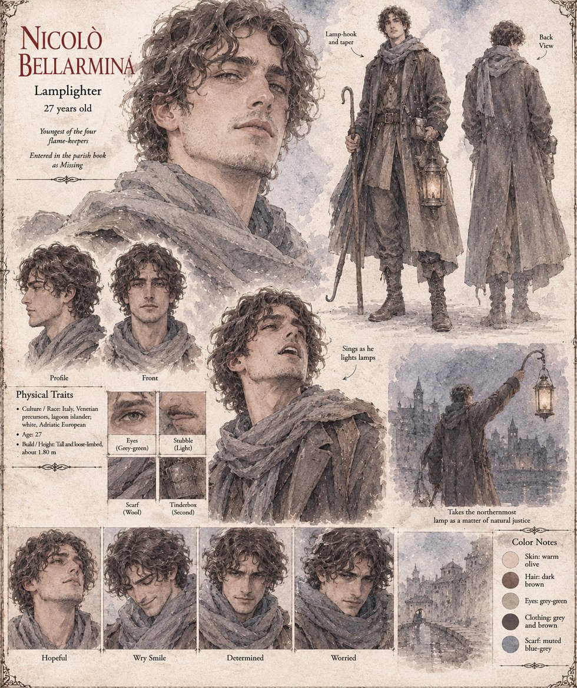
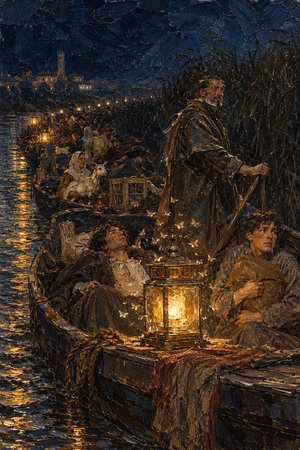

Nicolò Bellarmina
Lamplighter of Focolare, youngest of the four flame-keepers · Agata’s brother · entered in the parish book as Missing · 27
A lamplighter of twenty-seven, the youngest of the four who keep the flame, whom the whole island calls Nico and whom his sister calls by all three of his given names when she is displeased. He sings while he works, badly, in a warm cracked baritone, carries a second tinderbox against what he calls the Sun’s occasional carelessness, and has never in his life been on a river. On the third night of the river he carries the jar of shells forward to the lead boat and lays out the Tide Game on a barrel-head for Ilario, having waited twenty years for someone to say it is not a game anyone can win. On the last night he asks his sister Agata for the northernmost lamp, as the youngest keeper’s due, and says Count me at the far lamp, Agata, and you will always know where I am. At Lamp Forty-One he shares the northern rota with Ilario; the two sing a half-tone apart, and the householders learn that sound to mean the north is kept.
On the twenty-first of Iverin he asks Ilario to take the Far Lamp for the night. You will owe me a night, says Ilario; Two, says Nico, and they shake on it. He spends the evening with Agata over a hen and a loaf and gives her a moon-lens, a present for a woman who had everything counted except the one thing she looked at. Ilario is taken at the Far Lamp. At the next Kindling the hollow screams for nine seconds; Nico does not move for the first six, then touches his sister’s sleeve, says I owe him a night and crosses the Line between Lamp Forty and Lamp Forty-One at a dead run. He is entered Missing that night. On the third night the hollow speaks in his voice, lightly: I’ve come to stand the first of the two. The Legate rules that he died unlit, and Agata lists his estate for the Reclamation: a worn wool cloak, a lamp-hook, a dented second tinderbox, three shirts, boots, a jar of shells. The sexton digs his grave in Dark Ground that evening and sets a flat river-stone with his name at its head. The Listeners say his name at the stones, Ilario. Nico. Tonin, and at the Concord his entry is the first Agata has reversed.
The manuscript gives his age, his singing, the second tinderbox, the lamp-hook and the rest of the estate list, and the name Nicolò Bellarmina; it gives no height, build, hair, eyes or face. The sheet’s tall, loose-limbed build of about 1.80 m, dark curly hair, light stubble, grey-green eyes, long brown coat and muted blue-grey wool scarf are its own, as are its panels Hopeful, Wry Smile, Determined and Worried, its portrait Sings as he lights lamps and its scene Takes the northernmost lamp as a matter of natural justice, which condenses the manuscript’s wording about the youngest keeper taking the loneliest post. Its second, unlabelled scene panel (a stone bridge over a canal between old buildings) is not in the manuscript. The title lines (Lamplighter, 27 years old, Youngest of the four flame-keepers, Entered in the parish book as Missing) follow it.
“Count me at the far lamp, Agata, and you will always know where I am.”
Appears In

Related Subjects


Related Records

On the sixth night of the nine-day Translation of Focolare, the moths come out of the reeds on both banks in their hundreds and settle in halos of trembling white about every lantern on the water. Bortolo Zanni, the ferry-master, stands in the stern of the lead boat with one hand on the sweep; Nico and Ilario ride with the flame, and the islanders, who have never been visited at the flame by anything but the flame, stare upward.

On the twenty-first of Iverin, a little after the tenth hour, Ilario, nineteen, sits on the low stool beside the iron post of Lamp Forty-One, the Far Lamp, which he has taken for the night from Nico, and a warm, pale, many-lipped flower opens at his feet. He bends toward it as one bends toward a fire; the moths rise off the lamp and settle on its rim, and it takes thirty-one seconds by the count of the sexton, who watches from his fence and does not lift the shovel.